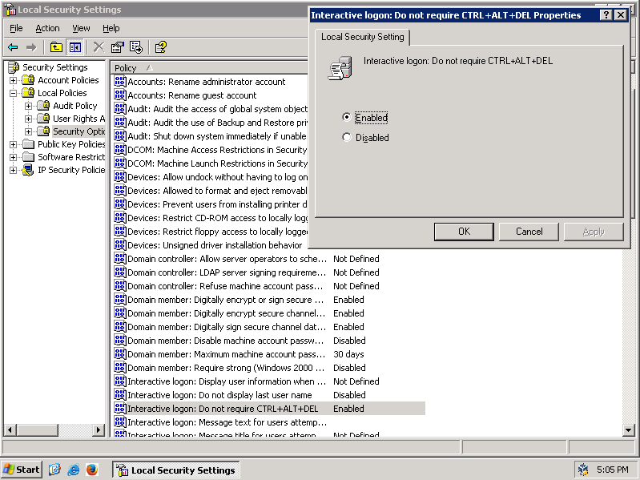

Converting Windows Server into a Workstation OS
It might seem weird to use a server release of Windows as your primary Operating System, however, there are a few (in my peronsal opinion) advantages to using a server release such as:
- Higher performance in comparison to the client SKUs of Windows
- Lower amount of programs included by default compared to the client SKUs of Windows
- You have the possibility to use any server-only component as you wish.
If this was enough for you attempt following this guide. I can help you with doing that using this exact guide.
Notes
- If you are using a Wireless Network card, you will need to enable the Wireless LAN Service for your Wireless Network card to work.
- Instructions may differ based upon the version of Windows Server being used, although some differences will be noted in the guide.
- Since Windows Server 2008, there exists a "Core" variant of every SKU, the main difference between the "Core" and "Desktop Experience" variants of each SKU is the lack of a shell on the former.
Installation
The installation will remain the same as it has been on any client release of Windows. Although as it has been noted, with the release of Windows Server 2008, Microsoft has added a core variant of every SKU, which you would likely want to avoid.
Themes
This segment can be skipped if you are using Windows Server 2016 or later, as they have the service enabled automatically
If you were done with the installation of any Windows Server release prior to Windows Server 2016, you may have noticed that there is a complete lack of any theme whatsoever, excluding the Classic Theme. Depending on your usecase, that may be fine though, albeit if you are looking for the possibility to add desktop icons and etc, you may want to skip to 2nd step, which explains how you can enable the Desktop Experience, which is needed for such features.
Step 1. Enable Themes service
This step should be ignored if you are on Windows Server 2012 and later
To enable themes on Windows Server 2003 and later, you will need to open services.msc, and then find the Themes service. Once you have found it, you need to right click on a service called "Themes", then click on properties, and finally change the startup type to "Automatic". Once you have done that, you can start the service. If you are on Windows Server 2003, you will be able to start use any themes rightaway, however if you are on Windows Server 2008 or any newer release, you must continue onto the 2nd step.

Step 2. Enable Desktop Experience
Once you have started a server release of Windows, you may have noticed that a program called "Server Manager" may have popped up on your screen once you logged in your system. It will be useful for this guide, as it can add the possibility to add themes, along with various other workstation-related features, all that you need to do in this case is just to go to the components section of the program and add "Desktop Experience", the steps to do that may differ between the versions of Windows Server that you may end up using.
Disabling the CTRL-ALT-DEL prompt and password restrictions
If you have started up a Windows server before, you may have noticed that in order to log in, you need to press CTRL-ALT-DEL, as was earlier done on Windows NT. Depending on your preference, you may, or may not like this feature. To add insult to injury (even if it depends on your preference), with Windows Server 2008, Microsoft has made making password for a Server mandatory, along with the required password needing to be strong. To disable this feature you first need to run "Control Panel", then go to "Administrative Tools", and then double click on "Local Security Policy" afterwards. After you've launched the program, you need to go into Local Policies on the left side on your screen, and then Security Options, where you can finally disable the prompt. To disable the password policy you will need to go a few directories back in the program until you find "User Account Policies", inside of which you will need to head into "Password Policy", where the needed policy will finally be found in. You can now simply disable the policy if you need to.
Disabling Shutdown Event Tracker
If you had the need to power off or restart the system, you may have noticed that unlike a client release of Windows, you need to manually write down a reason as to why you are wishing to power off the system. For a server, that of course makes sense as a shutdown is a rather unstandard thing for a server to do, and which only truly ends up being needed for maintanence reasons rather than for practical reassons. To fix this you will need to run gpedit.msc, then go into Computer Configuration, Administrative Templates, and then finally, System, where you will finally be able to find "Display Shutdown Event Tracker", you will need to change the option from "Not Configured", to "Disabled"
Performance and DEP
Now in "Performance" tab, that is in sysdm.cpl, to get the most Client-like look from Windows Server, I would recommend you to change "Performance" settings to ones for best appearance. In advanced, you can change optimizations from Background applications to Programs, after that you will need to go to the third tab which should be DEP. There you can change DEP from being used everywhere to nly for default Windows programs. This will require a restart, if you have completed everything needed before this, you can now safely restart your system.

Disabling IE ESC
You should be done with this guide now. However, if you tried to use Internet Explorer, you may have noticed that a tool called Enhanced Security is stopping you from going into any webpage, which makes it extemely hard to go onto any website. To disable it, all you need to do is go to "Server Manager" and then find IE ESC, and then finally changing all the options to disabled afterwards.

If you have followed everything correctly, you should have an OS that looks much more like a Client OS, with all the benefits of a Server OS.